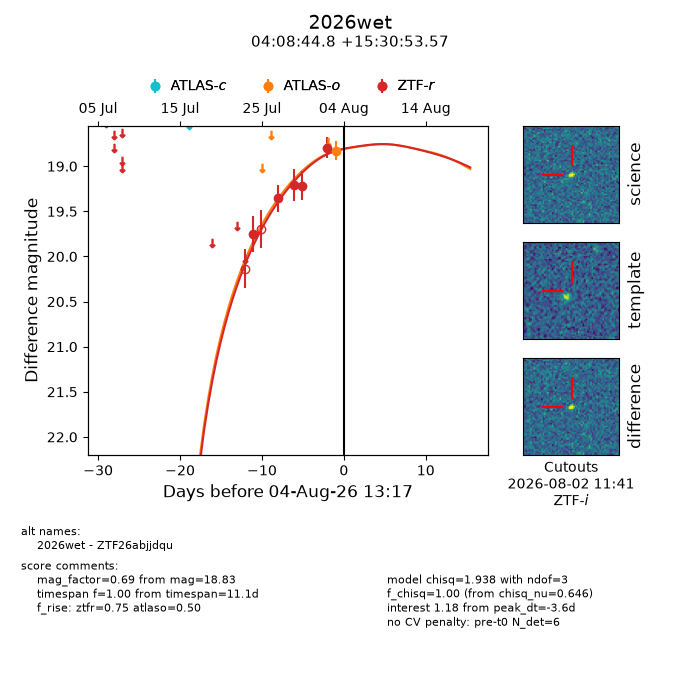
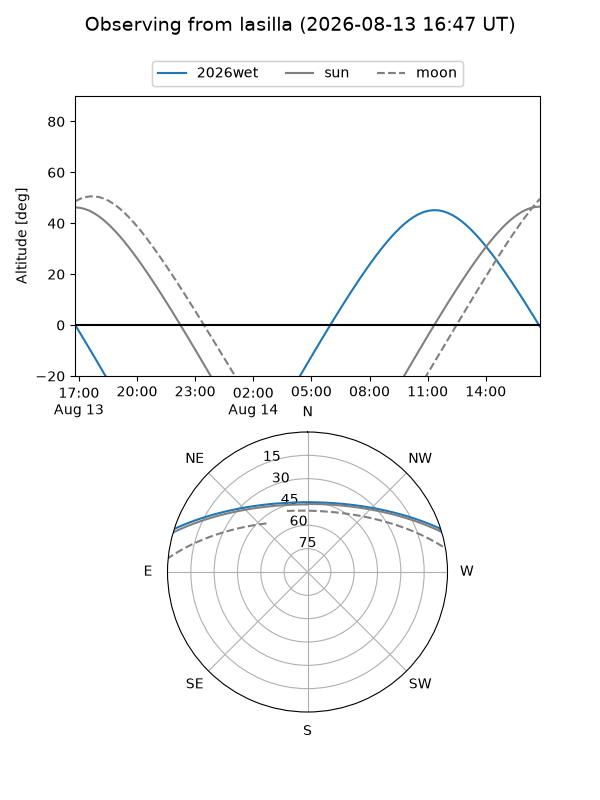
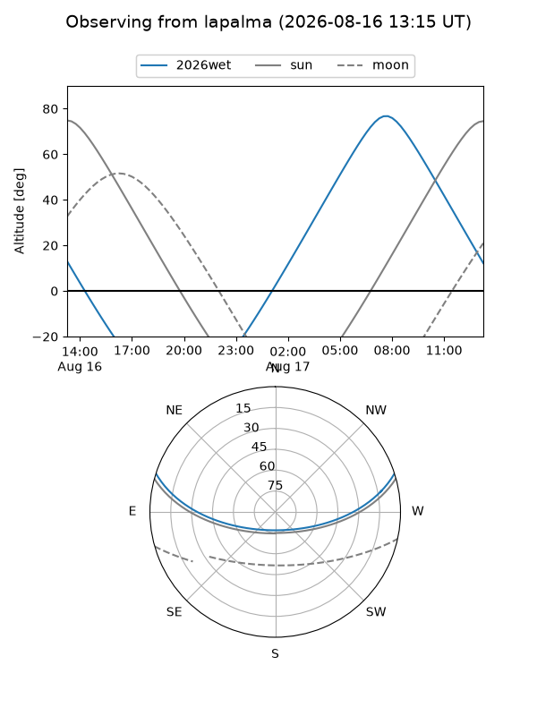
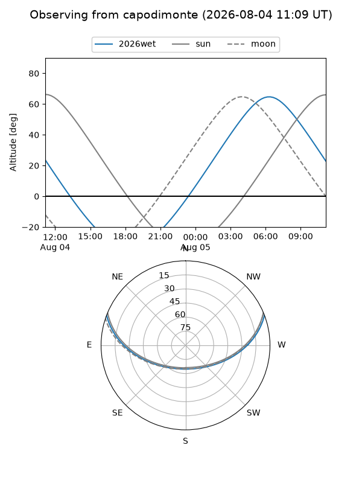
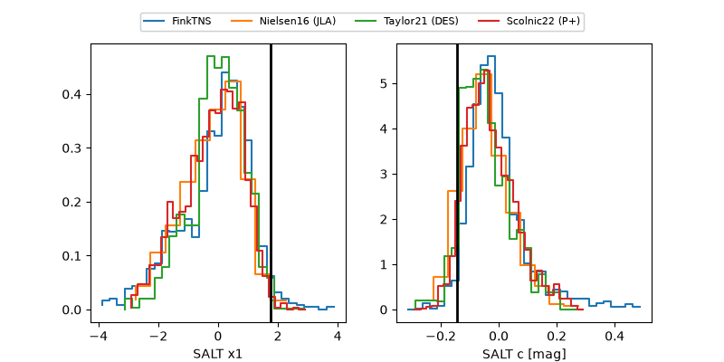

2026wet
Target 2026wet at 2026-08-04 13:19
Aliases and brokers:
FINK-ZTF: ztf.fink-portal.org/ZTF26abjjdqu
Lasair-ZTF: lasair-ztf.lsst.ac.uk/objects/ZTF26abjjdqu
ALeRCE-ZTF: alerce.online/object/ZTF26abjjdqu
YSE-PZ: ziggy.ucolick.org/yse/transient_detail/2026wet
TNS name: wis-tns.org/object/2026wet
Direct TNS query: direct search
alt names
ZTF26abjjdqu (ztf,fink_ztf)
2026wet (tns,yse)
Coordinates:
equatorial (ra, dec) = 62.1865,+15.51488
equatorial (HMS+DMS) = 04:08:44.77,+15:30:53.57
galactic (l, b) = (177.2692,-25.90846)
Flags:
TNS type: nan
peak dt: -3.6
Photometry:
last atlaso=18.83, ztfr=18.79
1 atlaso, 5 ztfr detections
Lightcurve

Visibility



Additional plots
